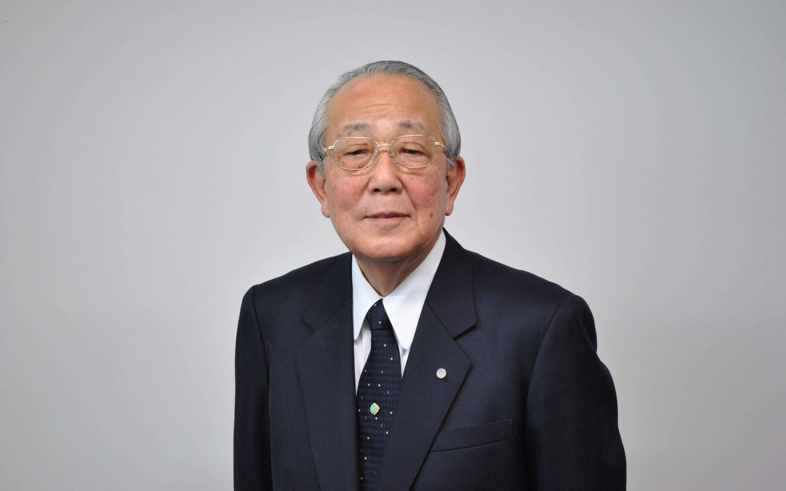

日本经营之圣 · 1932—2022
敬天爱人 · 利他经营 —— 以心为本的人生与经营智慧
他白手起家创办京瓷与 KDDI 两家世界 500 强企业，78 岁临危受命，让破产的日本航空在 424 天内扭亏为盈。他说：经营企业就是经营人心，人生与工作的结果，取决于思维方式、热情与能力三者的乘积。

稻盛和夫（1932—2022）· 京瓷 / KDDI 创始人
LIFE · 人生轨迹
稻盛和夫并非天资聪颖——初中、高中、大学考试屡屡不及格，毕业时只能进入一家濒临倒闭的陶瓷厂。他的人生转折，始于一句朴素的反问：「作为人，何谓正确？」
1月21日生于日本鹿儿岛县鹿儿岛市，家中排行第二，童年生活清贫。
就职于生产高压绝缘瓷瓶的京都松风工业，公司濒临倒闭、工资难以为继，同期入职的同事相继离职，他独自留下，吃住在实验室埋头研发。
在熟人出资帮助下，以300万日元本金创立京都陶瓷株式会社，初始员工仅28人。以精密陶瓷技术为根基，逐步发展为电子元件、通信设备、光学仪器等领域的综合型企业。
顺应日本电信自由化浪潮，从零切入通信行业，在逆境中创建第二电电（DDI），后发展成日本第二大通信运营商 KDDI。同年设立稻盛财团，创设国际奖项「京都奖」，并创办盛和塾，义务培育年轻经营者。
65岁在体检中得知身患胃癌，他平静回应「喔，是癌症吗」，随后按原计划继续演讲。术后两月，他宣布退居二线，在京都圆福寺正式出家，此后将大部分精力投入慈善与全球演讲。
日航负债逾万亿日元申请破产保护，他受日本政府再三邀请出山，提出两个条件：零薪水出任会长、不带团队。这位「彻头彻尾的门外汉」开始了他经营哲学最震撼的一次实践。
到任后以哲学渗透经营：明确经营目标、贯彻「经营十二条」、改革官僚体制、推行航线独立核算。重建首年即创造日航史上空前的1884亿日元利润，位居全球航空业之首。
9月19日，日航在东京证券交易所再次上市，宣告凤凰涅槃。从着手重建到重新上市仅用时两年多，而日本政府企业再生支援机构同期协助的企业中，从重建到上市平均耗时七年以上。
8月24日，稻盛和夫因衰老在京都市内的家中去世，享年90岁。他用一生印证了自己所说的话：「人生就是不断提升心性、磨炼灵魂的过程」。
PHILOSOPHY · 核心哲学
稻盛和夫一生践行的不是高深的管理理论，而是最朴素的人生道理。京瓷与 KDDI 之所以基业长青，他给出的答案始终是：「由于它有坚定的经营哲学，并将之与员工共享」。
京瓷的社训，源自西乡隆盛。「敬天」——尊重自然规律与公理正义；「爱人」——以仁爱之心待人、关爱他人。判断一切事物，不以利害得失，而以是非善恶为基准。
经营的出发点，不是自己的私欲，而是「追求全体员工物质和精神两方面的幸福，并为人类社会的进步发展做出贡献」。利他看似让渡利益，却常常带来意想不到的回报。
京瓷经营的原点，是建立员工心有所属的平台，让每位员工都成为经营者。人心易变、脆弱，却也最可靠、最坚固——一旦赢得人心，就没有办不成的事。
稻盛和夫的判断基准，不是利害得失，而是最简单的伦理：正直、勤奋、谦虚、利他、感谢。把「作为人应该做的正确的事，以正确的方式贯彻到底」，就是他的全部哲学。
FORMULA · 成功方程式
这是稻盛和夫思想的总纲。能力与热情都只有 0 到 100 分，而思维方式从负 100 到正 100——它是乘积的符号：方向一旦错了，能力与热情越强，结果反而越糟。
人生 · 工作的结果 ＝ 思维方式 × 热情 × 能力
思维方式 −100 ～ +100 · 热情 0 ～ 100 · 能力 0 ～ 100
先天的资质，加上后天学到的知识、经验与技能。能力是天赐的，但可以靠努力拓展。
对工作的热爱与付出的努力。热情靠意志点燃，是三者中唯一可以完全由自己决定的变量。
哲学、思想、伦理观等生活的姿态。它决定乘积的正负——方向错了，一切归零甚至为负。
调整三个变量的值，观察结果如何变化——尤其注意「思维方式」为负时会发生什么。
12 RULES · 经营十二条
稻盛和夫把京瓷与 KDDI 的经营实践浓缩为十二条，既是经营者的行动纲领，也是普通人的处世准则。他反复强调：「经营取决于经营者的意志，首先得经营者自己相信」。
树立光明正大的、符合大义名分的崇高目标——「追求全体员工物质和精神两方面的幸福」，并把它作为经营的原点。
把年度目标、月度目标分解到每一天、每一个部门，让全体员工共有，并始终以数字意识经营。
要达成目标，必须怀有「渗透到潜意识」的强烈愿望——睡也想、醒也想，持续不断地思考，直到梦想成真。
一步一步、踏实努力，比谁都更认真地工作。在经营中，没有捷径，只有持续燃烧般的努力。
利润无需追逐，它只是努力的自然结果。把销售做到最大、把经费压到最小，利润自然随之而来。
价格定在客户乐于接受、公司又能盈利的临界点上，是领导者的职责，也是经营成败的关键。
经营好比马拉松，必须有不达目的誓不罢休、洞穿岩石般的坚强意志，才能跨越一个又一个难关。
经营者需要保护员工的强烈责任感与斗争心。在严酷的商业竞争中，缺乏斗魂就无法生存。
「知识」加上「见识」还不够，更要有「胆识」——以纯粹的动机和坚定的信念，敢于在关键时刻做出决断。
今天比昨天好，明天比今天好。不断改良改善，在创新中持续前进，让平凡的工作累积成非凡的事业。
「利他」是最高的经营智慧。以体谅与关怀之心待人，看似让渡利益，最终会得到更大的回报。
抱着梦想和希望，以坦诚之心处世。不管现实多么严峻，始终保持开朗的心境，相信未来必然光明。
SIX · 六项精进
稻盛和夫说，这是他度过美好人生的「最低限度的日常修行」，也是经营者的自我修炼：「每一天都付出真挚的努力，就是人生的正道」。
比谁都更认真地工作，是度过人生、成就事业最根本的一条。努力本身就是一种修行。
成功时最易傲慢。真正的成功者，越是成功越要谦卑，把成绩归功于他人与天时。
每天检点自己的言行，觉察自私与懈怠，及时改正。反省是提升心性最快的路径。
感谢是幸福的源泉。对身边的万事万物心存感激，心就变得柔软而富足。
「积善之家，必有余庆」。以利他之心行事，为他人着想，最终也会照亮自己。
过去的失败与烦恼，不必反复咀嚼。理性地反省、痛痛快快地忘记，然后重新出发。
METHOD · 经营方法
哲学要靠方法落地。稻盛和夫把经营哲学转化为两套可操作的工具：划小组织、全员经营的阿米巴模式，以及以现金流与诚信为基石的会计七原则。
把组织划分成一个个小集体（阿米巴），每个阿米巴独立核算、自主经营，人人都是经营者。京瓷内部曾同时运行一千多个阿米巴，最大限度贴近现场、释放每一个人的力量。日航重建中的「航线独立核算」，正是这一思想的延续。
「不懂会计就不能经营。」稻盛和夫把会计视为透视经营的仪表盘，用七条原则守住企业的肌体健康与经营者的良知：
QUOTES · 经典语录
以下语录整理自稻盛和夫公开著作与演讲，句句是经营，也是人生。
人生·工作的结果 ＝ 思维方式 × 热情 × 能力
—— 人生方程式付出不亚于任何人的努力，是人生和事业成功的最强动力。
—— 出自《干法》答案永远在现场。现场有神灵。
—— 经营实践认为不行的时候，正是工作的开始。
—— 经营实践以利他之心度人生，能带来意想不到的回报。
—— 出自《活法》将平凡变成非凡，靠的是持续的努力。
—— 出自《干法》人生就是不断提升心性、磨炼灵魂的过程。
—— 出自《活法》强烈的愿望，是事业成功的原动力——睡也想、醒也想，持续地思考。
—— 出自《京瓷哲学》BOOKS · 代表著作
稻盛和夫一生笔耕不辍，这些著作是通往他经营与人生智慧的钥匙：
经营与人生的入门总纲，提出人生方程式与「作为人，何谓正确」的判断基准。
回答「为什么要工作」「如何爱上工作」，把努力本身变成一种修行。
晚年思想的集大成之作：一切始于心，终于心。
度过美好人生的六项日常修行，经营者的自我修炼手册。
划小组织、独立核算、全员参与经营的经典方法论。
京瓷数十年经营实践淬炼出的哲学体系，共78条。
经营之道的原点：尊重规律、关爱他人，以善心行善业。
从鹿儿岛少年到经营之圣，传奇一生的第一手回顾。